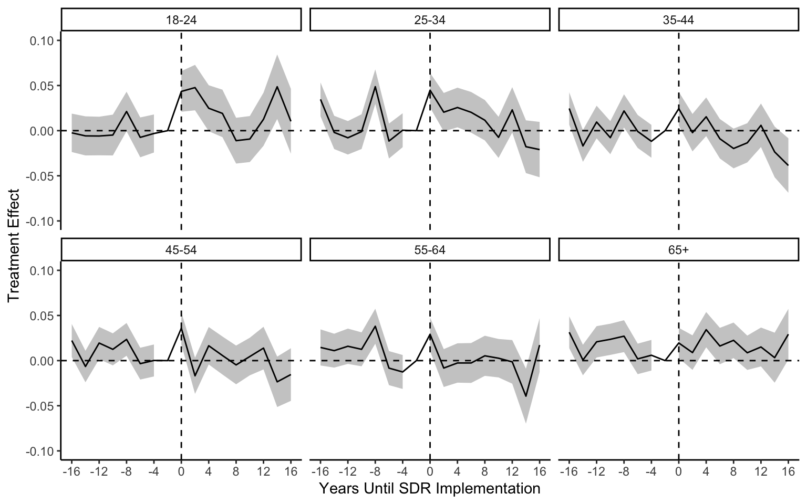
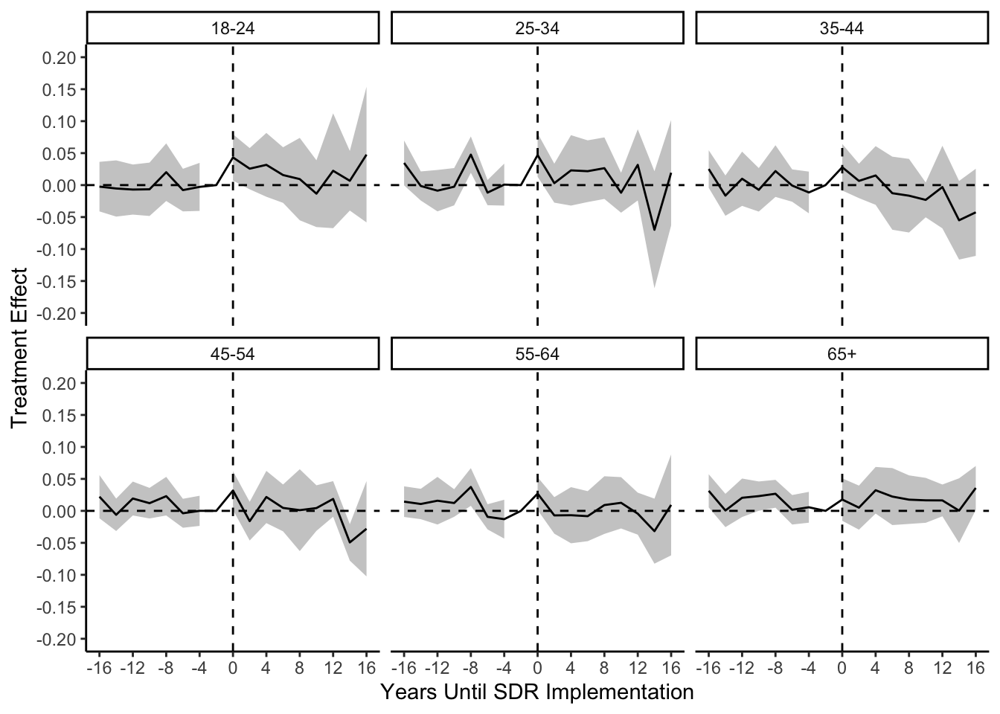
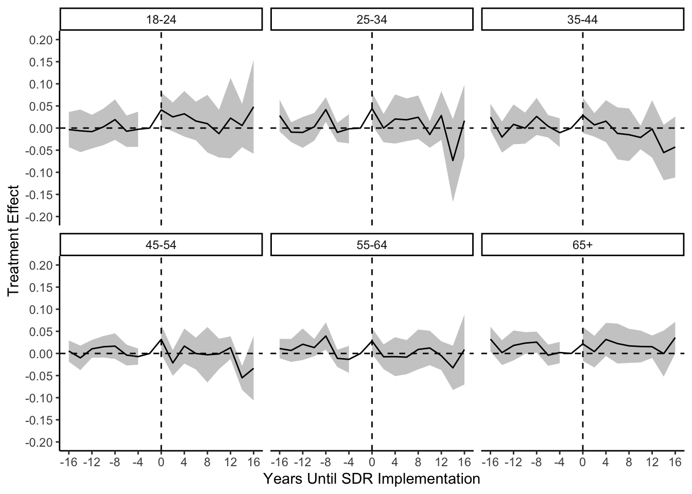
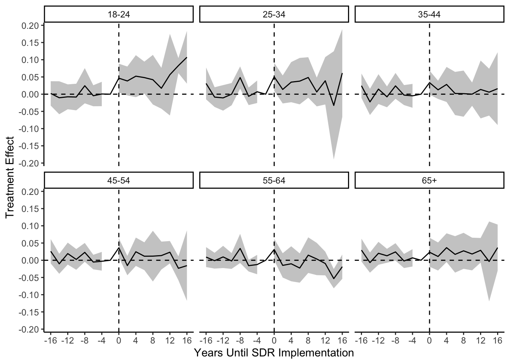

Grumbach and Hill (2022) looks at how same day registration (SDR) laws affect turnout for different kinds of voters. It analyzes the effect of these laws on voter turnout in presidential and nonpresidential elections. The key outcome variable is voter turnout. The authors conduct subgroup analysis for different age groups.
The full citation is
Grumbach, Jacob M., and Charlotte Hill. “Rock the registration: Same day registration increases turnout of young voters.” Journal of Politics 84.1 (2022): 405-417.
More details on the replication: > Li, Zikai, and Anton Strezhnev. “A Guide to Event Study Plots for Political Scientists.” Working Paper (2024).
Unit
Individual (primary)
Time
Year
Type of design
Staggered rollout
Replicated Figure(s)
Figures A2
Data description and pre-processing
The relevant variables are:
year - Year
state - State
voted - Whether an individual voted in a given year
sdr - Whether the state has same-day registration law; treatment indicator
presidential_year - Whether there is a presidential election
### From original replication codeagg_cps_age <-aggregate(voted ~ state + year + sdr + presidential_year + age_group, cps, mean, na.rm=T)agg_cps_age <- agg_cps_age[order(agg_cps_age$state, agg_cps_age$year),]firstyears <-do.call("rbind", as.list(by(agg_cps_age[agg_cps_age$sdr==1,], agg_cps_age$state[agg_cps_age$sdr==1], head, n=1)))firstyears$yearSDR <- firstyears$yearagg_cps_age <-join(agg_cps_age, firstyears[,c("state", "yearSDR")])# Make a variable for how many years away a unit is from its treatment time # (0 is the time of treatment initiation, -1 is the time *just* before treatment)agg_cps_age <- agg_cps_age %>%mutate(yearFromSDR = year - yearSDR)# ever-treated variableagg_cps_age$ever_treated[is.na(agg_cps_age$yearFromSDR)] <-0agg_cps_age$ever_treated[!is.na(agg_cps_age$yearFromSDR)] <-1# all never-treateds' yearFromSDR get assigned '0' agg_cps_age$yearFromSDR[is.na(agg_cps_age$yearFromSDR)] <-0cps_exact <-join(cps, agg_cps_age[agg_cps_age$age_group=="18-24",c("state", "year", "yearFromSDR", "ever_treated", "yearSDR")])gc()cps_exact$yearFromSDR <-as.numeric(cps_exact$yearFromSDR)# Make the dummy variables using the factor syntax - make -2 the reference periodcps_exact$yearFromSDRFactor <-relevel(as.factor(cps_exact$yearFromSDR), ref="-2")# Make the dummy variables manuallycps_exact$`treat-16`<-as.numeric(cps_exact$yearFromSDRFactor =='-16')cps_exact$`treat-14`<-as.numeric(cps_exact$yearFromSDRFactor =='-14')cps_exact$`treat-12`<-as.numeric(cps_exact$yearFromSDRFactor =='-12')cps_exact$`treat-10`<-as.numeric(cps_exact$yearFromSDRFactor =='-10')cps_exact$`treat-8`<-as.numeric(cps_exact$yearFromSDRFactor =='-8')cps_exact$`treat-6`<-as.numeric(cps_exact$yearFromSDRFactor =='-6')cps_exact$`treat-4`<-as.numeric(cps_exact$yearFromSDRFactor =='-4')cps_exact$`treat-2`<-as.numeric(cps_exact$yearFromSDRFactor =='-2')cps_exact$`treat0`<-as.numeric(cps_exact$yearFromSDRFactor =='0')cps_exact$`treat2`<-as.numeric(cps_exact$yearFromSDRFactor =='2')cps_exact$`treat4`<-as.numeric(cps_exact$yearFromSDRFactor =='4')cps_exact$`treat6`<-as.numeric(cps_exact$yearFromSDRFactor =='6')cps_exact$`treat8`<-as.numeric(cps_exact$yearFromSDRFactor =='8')cps_exact$`treat10`<-as.numeric(cps_exact$yearFromSDRFactor =='10')cps_exact$`treat12`<-as.numeric(cps_exact$yearFromSDRFactor =='12')cps_exact$`treat14`<-as.numeric(cps_exact$yearFromSDRFactor =='14')cps_exact$`treat16`<-as.numeric(cps_exact$yearFromSDRFactor =='16')cps_exact$include <-as.numeric(cps_exact$yearFromSDR <=16& cps_exact$yearFromSDR >=(-16))# Code those with NAs in yearSDR as not having SDRcps_exact$yearSDR_did <-ifelse(is.na(cps_exact$yearSDR), 0, cps_exact$yearSDR)gc()
“Bivariate” results (This outputs an exact replication of Figure A2 in original paper)
# By age-groupage_group_levels =c("18-24", "25-34", "35-44", "45-54", "55-64", "65+")# Store results for each age groupage_group_results <-list()# For each age groupfor (group_level in age_group_levels){#Fit a regression to get the per-period tests dyn_reg_1 <-lm_robust(voted ~`treat-16`+`treat-14`+`treat-12`+`treat-10`+`treat-8`+`treat-6`+`treat-4`+`treat0`+`treat2`+`treat4`+`treat6`+`treat8`+`treat10`+`treat12`+`treat14`+`treat16` , fixed_effects =~as.factor(year) +as.factor(state), data=cps_exact[ cps_exact$age_group==group_level & (cps_exact$yearFromSDR>=(-16) & cps_exact$yearFromSDR<=16) &!is.na(cps_exact$voted),])# Original paper clustered wrong, so don't do CRSEs# Make into a plotting set dyn_plot_1 <-tidy(dyn_reg_1) %>%filter(!is.na(estimate)) %>%mutate(term =str_remove_all(term, "`")) %>%mutate(period =as.numeric(str_remove(term, fixed("treat")))) %>%select(period, estimate, conf.low, conf.high)# Tack on the baseline dyn_plot_1 <-rbind(dyn_plot_1, data.frame(period =-2, estimate =0, conf.low =NA, conf.high =NA))# Label the age_group dyn_plot_1$age_group <- group_level# Append age_group_results age_group_results[[group_level]] <- dyn_plot_1}dyn_plot_combined <-bind_rows(age_group_results)# Coefficient plotexact_1 <- dyn_plot_combined %>%ggplot(aes(x=as.numeric(period), y = estimate, ymin=conf.low, ymax=conf.high)) +geom_ribbon(fill="grey80") +geom_line() +facet_wrap(~age_group) +geom_vline(xintercept =-0, lty=2) +geom_hline(yintercept =0, lty=2) +xlab("Years Until SDR Implementation") +ylab("Treatment Effect") +scale_x_continuous(breaks=c(-16,-12,-8,-4,0,4,8,12,16)) +scale_y_continuous(breaks=c(-0.1,-0.05,0,0.05,0.1), limits=c(-.1,.1)) +theme_classic()print(exact_1)

Corrected replications
Replication 1 (The replication figure we use in our paper)
Changes: - Clustered the SEs (the original paper’s code contained a typo for clustered standard errors, which we correct here)
# By age-groupage_group_levels =c("18-24", "25-34", "35-44", "45-54", "55-64", "65+")# Store results for each age groupage_group_results <-list()# For each age groupfor (group_level in age_group_levels){#Fit a regression to get the per-period tests dyn_reg_1 <-lm_robust(voted ~`treat-16`+`treat-14`+`treat-12`+`treat-10`+`treat-8`+`treat-6`+`treat-4`+`treat0`+`treat2`+`treat4`+`treat6`+`treat8`+`treat10`+`treat12`+`treat14`+`treat16`, fixed_effects =~as.factor(year) +as.factor(state), data=cps_exact[ cps_exact$age_group==group_level & (cps_exact$yearFromSDR>=(-16) & cps_exact$yearFromSDR<=16)&!is.na(cps_exact$voted),], clusters=state, se_type="stata")#print(dyn_reg_1)# Make into a plotting set dyn_plot_1 <-tidy(dyn_reg_1) %>%filter(!is.na(estimate)) %>%mutate(term =str_remove_all(term, "`")) %>%mutate(period =as.numeric(str_remove(term, fixed("treat")))) %>%select(period, estimate, conf.low, conf.high)# Tack on the baseline dyn_plot_1 <-rbind(dyn_plot_1, data.frame(period =-2, estimate =0, conf.low =NA, conf.high =NA))# Label the age_group dyn_plot_1$age_group <- group_level age_group_results[[group_level]] <- dyn_plot_1}dyn_plot_combined <-bind_rows(age_group_results)# Coefficient plotreplication_1 <- dyn_plot_combined %>%ggplot(aes(x=as.numeric(period), y = estimate, ymin=conf.low, ymax=conf.high)) +geom_ribbon(fill="grey80") +geom_line() +facet_wrap(~age_group) +geom_vline(xintercept =-0, lty=2) +geom_hline(yintercept =0, lty=2) +xlab("Years Until SDR Implementation") +ylab("Treatment Effect") +scale_x_continuous(breaks=c(-16,-12,-8,-4,0,4,8,12,16)) +scale_y_continuous(breaks=c(-.2,-.15, -0.1,-0.05,0,0.05,0.1,0.15, 0.2), limits=c(-.2,.2)) +theme_classic()print(replication_1)
Replication 2 (First extension)
Changes - Clustered the SEs - Dropped the always-treated groups - Correctly re-coded the never-treated groups
### From original replication codeagg_cps_age <-aggregate(voted ~ state + year + sdr + presidential_year + age_group, cps, mean, na.rm=T)agg_cps_age <- agg_cps_age[order(agg_cps_age$state, agg_cps_age$year),]firstyears <-do.call("rbind", as.list(by(agg_cps_age[agg_cps_age$sdr==1,], agg_cps_age$state[agg_cps_age$sdr==1], head, n=1)))firstyears$yearSDR <- firstyears$yearagg_cps_age <-join(agg_cps_age, firstyears[,c("state", "yearSDR")])# Make a variable for how many years away a unit is from its treatment time # (0 is the time of treatment initiation, -1 is the time *just* before treatment)agg_cps_age <- agg_cps_age %>%mutate(yearFromSDR = year - yearSDR)# ever-treated variableagg_cps_age$ever_treated[is.na(agg_cps_age$yearFromSDR)] <-0agg_cps_age$ever_treated[!is.na(agg_cps_age$yearFromSDR)] <-1# all never-treateds' yearFromSDR get assigned '0' agg_cps_age$yearFromSDR[is.na(agg_cps_age$yearFromSDR)] <-Inf# Which ones are always treatedagg_cps_age$always_treated <-0agg_cps_age$always_treated[agg_cps_age$yearSDR ==1978] <-1# Ohio reversesagg_cps_age$reversed <-0agg_cps_age$reversed[agg_cps_age$state =="Ohio"] <-1cps_rep2 <-join(cps, agg_cps_age[agg_cps_age$age_group=="18-24",c("state", "year", "yearFromSDR", "ever_treated", "always_treated", "reversed")])gc()cps_rep2$yearFromSDR <-as.numeric(cps_rep2$yearFromSDR)# Make the dummy variables using the factor syntax - make -2 the reference periodcps_rep2$yearFromSDRFactor <-relevel(as.factor(cps_rep2$yearFromSDR), ref="-2")cps_rep2$`treat-16`<-as.numeric(cps_rep2$yearFromSDRFactor =='-16')cps_rep2$`treat-14`<-as.numeric(cps_rep2$yearFromSDRFactor =='-14')cps_rep2$`treat-12`<-as.numeric(cps_rep2$yearFromSDRFactor =='-12')cps_rep2$`treat-10`<-as.numeric(cps_rep2$yearFromSDRFactor =='-10')cps_rep2$`treat-8`<-as.numeric(cps_rep2$yearFromSDRFactor =='-8')cps_rep2$`treat-6`<-as.numeric(cps_rep2$yearFromSDRFactor =='-6')cps_rep2$`treat-4`<-as.numeric(cps_rep2$yearFromSDRFactor =='-4')cps_rep2$`treat-2`<-as.numeric(cps_rep2$yearFromSDRFactor =='-2')cps_rep2$`treat0`<-as.numeric(cps_rep2$yearFromSDRFactor =='0')cps_rep2$`treat2`<-as.numeric(cps_rep2$yearFromSDRFactor =='2')cps_rep2$`treat4`<-as.numeric(cps_rep2$yearFromSDRFactor =='4')cps_rep2$`treat6`<-as.numeric(cps_rep2$yearFromSDRFactor =='6')cps_rep2$`treat8`<-as.numeric(cps_rep2$yearFromSDRFactor =='8')cps_rep2$`treat10`<-as.numeric(cps_rep2$yearFromSDRFactor =='10')cps_rep2$`treat12`<-as.numeric(cps_rep2$yearFromSDRFactor =='12')cps_rep2$`treat14`<-as.numeric(cps_rep2$yearFromSDRFactor =='14')cps_rep2$`treat16`<-as.numeric(cps_rep2$yearFromSDRFactor =='16')# Create indicator for inclusion in the regressioncps_rep2$include <-as.numeric(cps_rep2$yearFromSDR <=16& cps_rep2$yearFromSDR >=(-16) & cps_rep2$always_treated ==0)
Coefficient plot
# By age-groupage_group_levels =c("18-24", "25-34", "35-44", "45-54", "55-64", "65+")# Store results for each age groupage_group_results <-list()# For each age groupfor (group_level in age_group_levels){#Fit a regression to get the per-period tests dyn_reg_rep2 <-lm_robust(voted ~`treat-16`+`treat-14`+`treat-12`+`treat-10`+`treat-8`+`treat-6`+`treat-4`+`treat0`+`treat2`+`treat4`+`treat6`+`treat8`+`treat10`+`treat12`+`treat14`+`treat16` , fixed_effects =~as.factor(year) +as.factor(state),data=cps_exact[ cps_exact$age_group==group_level & (cps_rep2$include ==1| cps_rep2$yearFromSDRFactor =="Inf") & (cps_exact$yearFromSDR>=(-16) & cps_exact$yearFromSDR<=16) &!is.na(cps_exact$voted),], clusters=state, se_type="stata")#print(dyn_reg_rep2)# Make into a plotting set dyn_plot_2 <-tidy(dyn_reg_rep2) %>%filter(!is.na(estimate)) %>%mutate(term =str_remove_all(term, "`")) %>%mutate(period =as.numeric(str_remove(term, fixed("treat")))) %>%select(period, estimate, conf.low, conf.high)# Tack on the baseline dyn_plot_2 <-rbind(dyn_plot_2, data.frame(period =-2, estimate =0, conf.low =NA, conf.high =NA))# Label the age_group dyn_plot_2$age_group <- group_level age_group_results[[group_level]] <- dyn_plot_2}dyn_plot_combined <-bind_rows(age_group_results)# Coefficient plotreplication_2 <- dyn_plot_combined %>%ggplot(aes(x=as.numeric(period), y = estimate, ymin=conf.low, ymax=conf.high)) +geom_ribbon(fill="grey80") +geom_line() +facet_wrap(~age_group) +geom_vline(xintercept =-0, lty=2) +geom_hline(yintercept =0, lty=2) +xlab("Years Until SDR Implementation") +ylab("Treatment Effect") +scale_x_continuous(breaks=c(-16,-12,-8,-4,0,4,8,12,16)) +scale_y_continuous(breaks=c(-.2,-.15, -0.1,-0.05,0,0.05,0.1,0.15, 0.2), limits=c(-.2,.2)) +theme_classic()print(replication_2)

Drop those treated super-late
# Coefficient plot# By age-groupage_group_levels =c("18-24", "25-34", "35-44", "45-54", "55-64", "65+")# Store results for each age groupage_group_results <-list()# For each age groupfor (group_level in age_group_levels){#Fit a regression to get the per-period tests dyn_reg_rep3 <-lm_robust(voted ~`treat-16`+`treat-14`+`treat-12`+`treat-10`+`treat-8`+`treat-6`+`treat-4`+`treat0`+`treat2`+`treat4`+`treat6`+`treat8`+`treat10`+`treat12`+`treat14`+`treat16` , fixed_effects =~as.factor(year) +as.factor(state),data=cps_exact[ cps_exact$age_group==group_level& (cps_rep2$include ==1| cps_rep2$yearFromSDRFactor =="Inf") & (cps_exact$yearFromSDR>=(-16) & cps_exact$yearFromSDR<=16) &!is.na(cps_exact$voted),] %>%filter(!(st %in%c("UT", "HI", "VT"))), clusters=state, se_type="stata")#print(dyn_reg_rep3)# Make into a plotting set dyn_plot_3 <-tidy(dyn_reg_rep3) %>%filter(!is.na(estimate)) %>%mutate(term =str_remove_all(term, "`")) %>%mutate(period =as.numeric(str_remove(term, fixed("treat")))) %>%select(period, estimate, conf.low, conf.high)# Tack on the baseline dyn_plot_3 <-rbind(dyn_plot_3, data.frame(period =-2, estimate =0, conf.low =NA, conf.high =NA))# Label the age_group dyn_plot_3$age_group <- group_level age_group_results[[group_level]] <- dyn_plot_3}dyn_plot_combined <-bind_rows(age_group_results)# Coefficient plotreplication_3 <- dyn_plot_combined %>%ggplot(aes(x=as.numeric(period), y = estimate, ymin=conf.low, ymax=conf.high)) +geom_ribbon(fill="grey80") +geom_line() +facet_wrap(~age_group) +geom_vline(xintercept =-0, lty=2) +geom_hline(yintercept =0, lty=2) +xlab("Years Until SDR Implementation") +ylab("Treatment Effect") +scale_x_continuous(breaks=c(-16,-12,-8,-4,0,4,8,12,16)) +scale_y_continuous(breaks=c(-.2,-.15, -0.1,-0.05,0,0.05,0.1,0.15, 0.2), limits=c(-.2,.2)) +theme_classic()print(replication_3)

corrected replication using CS did estimator
Control group: never treated and yet-to-be-treated
Base period (placebo): universal (set to -1)
######did correct spec#####for (group_level in age_group_levels){# Use att_gt from did to retrieve ATTs dyn_reg_rep_did2 <-att_gt(yname ="voted",tname ="year",idname ="statefip",gname ="yearSDR_did",xformla =~1,base_period ="universal",control_group =c("nevertreated", "notyettreated"),allow_unbalanced_panel = T,cband = F,data=cps_exact[cps_exact$age_group==group_level& (cps_exact$yearFromSDR>=(-16) & cps_exact$yearFromSDR<=16)&!is.na(cps_exact$voted),])dyn_reg_rep_did2 <-aggte(dyn_reg_rep_did2, type="dynamic", na.rm = T)#print(dyn_reg_rep_did2)# Make into a plotting set dyn_plot_did2 <-tidy(dyn_reg_rep_did2) %>%filter(!is.na(estimate)) %>%mutate(term =str_remove_all(term, "`")) %>%mutate(period =as.numeric(str_remove_all(term, ("ATT\\(|\\)")))) %>%select(period, estimate, conf.low, conf.high)# Tack on the baseline dyn_plot_did2 <-rbind(dyn_plot_did2, data.frame(period =-2, estimate =0, conf.low =NA, conf.high =NA))# Label the age_group dyn_plot_did2$age_group <- group_level age_group_results[[group_level]] <- dyn_plot_did2}dyn_plot_combined_did2 <-bind_rows(age_group_results)# Coefficient plotreplication_did2 <- dyn_plot_combined_did2 %>%ggplot(aes(x=as.numeric(period), y = estimate, ymin=conf.low, ymax=conf.high)) +geom_ribbon(fill="grey80") +geom_line() +facet_wrap(~age_group) +geom_vline(xintercept =-0, lty=2) +geom_hline(yintercept =0, lty=2) +xlab("Years Until SDR Implementation") +ylab("Treatment Effect") +scale_x_continuous(breaks=c(-16,-12,-8,-4,0,4,8,12,16)) +scale_y_continuous(breaks=c(-0.2, -.15, -0.1,-0.05,0,0.05,0.1,0.15, 0.2)) +theme_classic()print(replication_did2)

Corrected replication using CS did estimator
Control group: never treated and yet-to-be-treated
Base period (placebo): varying (one period before the estimated period)
######did correct spec#####for (group_level in age_group_levels){#Fit a regression to get the per-period testsdyn_reg_rep_did3 <-att_gt(yname ="voted",tname ="year",idname ="statefip",gname ="yearSDR_did",xformla =~1,base_period ="varying",control_group =c("nevertreated", "notyettreated"),,allow_unbalanced_panel = T,cband = F,data=cps_exact[ cps_exact$age_group==group_level& (cps_exact$yearFromSDR>=(-16) & cps_exact$yearFromSDR<=16)&!is.na(cps_exact$voted),])dyn_reg_rep_did3 <-aggte(dyn_reg_rep_did3, type="dynamic", na.rm = T)#print(dyn_reg_rep_did3)# Make into a plotting set dyn_plot_did3 <-tidy(dyn_reg_rep_did3) %>%filter(!is.na(estimate)) %>%mutate(term =str_remove_all(term, "`")) %>%mutate(period =as.numeric(str_remove_all(term, ("ATT\\(|\\)")))) %>%select(period, estimate, conf.low, conf.high)# Tack on the baseline dyn_plot_did3 <-rbind(dyn_plot_did3, data.frame(period =-2, estimate =0, conf.low =NA, conf.high =NA))# Label the age_group dyn_plot_did3$age_group <- group_level age_group_results[[group_level]] <- dyn_plot_did3}dyn_plot_combined_did3 <-bind_rows(age_group_results)# Coefficient plotreplication_did3 <- dyn_plot_combined_did3 %>%ggplot(aes(x=as.numeric(period), y = estimate, ymin=conf.low, ymax=conf.high)) +geom_ribbon(fill="grey80") +geom_line() +facet_wrap(~age_group) +geom_vline(xintercept =-0, lty=2) +geom_hline(yintercept =0, lty=2) +xlab("Years Until SDR Implementation") +ylab("Treatment Effect") +scale_x_continuous(breaks=c(-16,-12,-8,-4,0,4,8,12,16)) +scale_y_continuous(breaks=c(-0.2, -.15, -0.1,-0.05,0,0.05,0.1,0.15, 0.2)) +theme_classic()print(replication_did3)